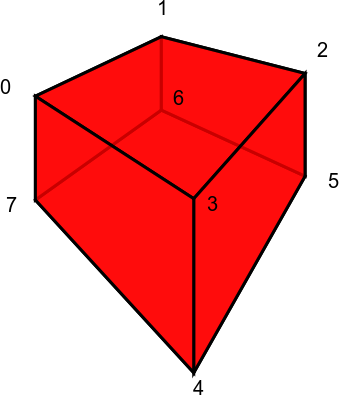
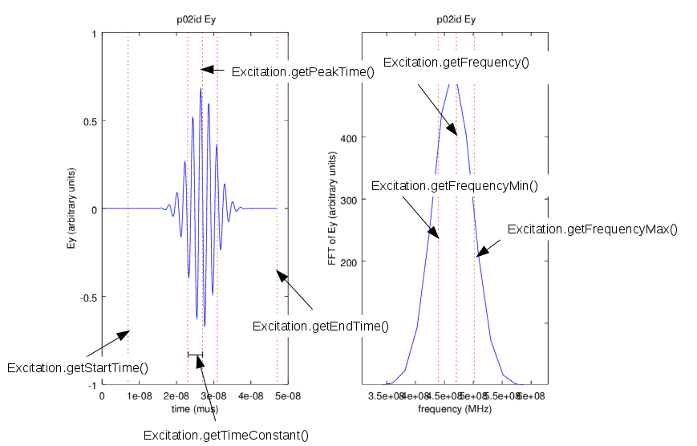

bfdtd package¶
Submodules¶
bfdtd.RCD module¶
RCD BFDTD objects
RCD = Rod Connected Diamond
- class bfdtd.RCD.FRD_HexagonalLattice[source]¶
Bases:
RCD_HexagonalLattice
- class bfdtd.RCD.RCD_HexagonalLattice[source]¶
Bases:
GeometryObjectThis class allows you to create RCD structures with some cylinders alligned along the Z axis.
bfdtd.RCD_waveguides module¶
- class bfdtd.RCD_waveguides.RCD_HexagonalLattice_ChiralWaveguide[source]¶
Bases:
RCD_HexagonalLattice- property chirality¶
chirality of the waveguide: right or left
bfdtd.SpecialTriangularPrism module¶
- class bfdtd.SpecialTriangularPrism.SpecialTriangularPrism(name='SpecialTriangularPrism', layer='SpecialTriangularPrism', group='SpecialTriangularPrism', lower=[0, 0, 0], upper=[1, 1, 1], permittivity=1, conductivity=0, NvoxelsX=10, NvoxelsY=10, NvoxelsZ=10, orientation=[0, 1, 2])[source]¶
Bases:
GeometryObjectCreates prism with 45 degree mirrors. Should have support for arbitrarily angled mirrors at some point.
bfdtd.BFDTDobject module¶
- class bfdtd.BFDTDobject.BFDTDobject[source]¶
Bases:
object- addBoxFrequencySnapshots()[source]¶
This should be called after the box and mesh have been defined. Else the box size might be incorrect.
Returns the “base snapshot”.
- addDefaultExcitation()[source]¶
Simply adds a default excitation centered in the simulation box, of excitation_size = box_size/10.
- addFrequencySnapshot(plane, position, frequency_list=None, name=None)[source]¶
Add a frequency snapshot.
- Parameters:
plane – The X, Y or Z plane.
position (float or list/array of size 3) – the X, Y or Z (depending on the value of plane) position or simply a set of 3D coordinates (ex:
[5.3, 6.4, 7.6]).frequency_list (a list of floats (ex: [1.2, 2.3, 3.4])) – a list of frequencies
name (string) – string
See also:
addSnapshot()
- addSnapshot(snapshot_class, plane, position_input, name=None)[source]¶
Adds a snapshot of class “snapshot_class”.
- Parameters:
snapshot_class – One of the snapshot classes or a custom snapshot class derived from them.
plane – ‘x’, ‘y’ or ‘z’
position_input – float or list/array of size 3
name – Name of the snapshot to add. If None, will be set to a string of the form “X/Y/Z snapshot_class.__name__”
- appendExcitation(excitation)[source]¶
Add one or more Excitation objects to the simulation.
- Parameters:
obj – Excitation or list of Excitation instances
- appendGeometryObject(obj)[source]¶
Add one or more geometry objects to the simulation.
- Parameters:
obj – GeometryObject or list of GeometryObject instances
- appendProbe(obj)[source]¶
Add one or more Probe objects to the simulation.
- Parameters:
obj – Probe or list of Probe instances
- appendSnapshot(obj)[source]¶
Add one or more snapshot objects to the simulation.
- Parameters:
obj – Snapshot or list of Snapshot instances
- autoMeshGeometry(meshing_factor, minimum_mesh_delta_vector3=[0.001, 0.001, 0.001])[source]¶
Automatically mesh geometry so that the max cell size is meshing_factor*1/n in each object.
- autoMeshGeometryWithMaxNumberOfCells(Lambda, MAXCELLS=10000000.0, a_min=1, a_step=1, a_start=10)[source]¶
Calls autoMeshGeometry(Lambda/a) until it finds the biggest value of a (i.e. smallest cell size) so that Ncells < MAXCELLS.
Returns the final value used for a.
- autosetFrequencySnapshotSettings(mode)[source]¶
Automatically sets frequency snapshots parameters.
- mode = 0:
repetition = (MaxIterations - start)/self.autoset_N_FrequencySnapshots
- mode = 1:
repetition = RepetitionFactor*period_max
- mode = 2:
repetition = RepetitionFactor*ExcitationEndTimeMax
- mode = 3:
repetition = biggest repetition between mode 1 and 2
start = ExcitationEndTimeMax first = start + repetition
- calculateMeshingParameters(minimum_mesh_delta_vector3)[source]¶
Returns a MeshingParameters object that can be used for meshing.
It uses the getMeshingParameters() function and useForMeshing attribute of the various BFDTD objects.
minimum_mesh_delta_vector3 : smallest cell size acceptable in the mesh. Because too small cells can cause Bristol FDTD to crash.
meshing_parameters attributes:
meshing_parameters.maxPermittivityVector_X
meshing_parameters.thicknessVector_X
meshing_parameters.maxPermittivityVector_Y
meshing_parameters.thicknessVector_Y
meshing_parameters.maxPermittivityVector_Z
meshing_parameters.thicknessVector_Z
- checkSimulation(output_checks=True)[source]¶
Supposed to make sure we don’t write out too many probes/snapshots…
Problem: snapshot boxes and other compound objects will not get counted properly…
Solution: Best to count objects after writing (maybe use tmp, sys.stdout, file buffer or similar to allow count without actual file output).
- fitBox(vec6)[source]¶
Changes the limits of the box to fit the geometry. Moves all other things as necessary to have box min be [0,0,0] (necessary?).
- getAllTimeSnapshots(filterBasedOnClass=False, split=False)[source]¶
Returns the time snapshots sorted into lists based on their type:
all_time_snapshots
time_snapshots
epsilon_snapshots
mode_filtered_probes
The classifications are exclusive, i.e.:
len(all_time_snapshots) = len(time_snapshots) + len(epsilon_snapshots) + len(mode_filtered_probes)
- Parameters:
filterBasedOnClass – Boolean. If True, the snapshot type will be determined based on its current class type, else it will be determined based on its attributes. Default: False.
- Returns:
(all_time_snapshots, time_snapshots, epsilon_snapshots, mode_filtered_probes) - tuple of lists
See also
Warning
The SnapshotBox subclasses are not yet supported by this system and will not be returned even if they generate TimeSnapshot entries.
- getEpsilonSnapshots(filterBasedOnClass=False, split=False)[source]¶
Returns all “epsilon snapshots”.
See also
- getExcitationFrequencyRange()[source]¶
Returns the total frequency range covered by all excitations.
- getExcitationInfos()[source]¶
Loops over all excitations and returns the tuple (StartTimeMin, EndTimeMax, FrequencyMin, FrequencyMax).
- getFrequencySnapshots(split=False)[source]¶
Returns a list of the frequency snapshots. .. todo:: improve “super-snapshot” handling… (boxes, etc) -> one problem is that it depends on the mesh of course…
- getGeometryObjectsByName(name)[source]¶
Returns the list of geometry objects matching the name name.
- Parameters:
name – string (ex:
'defect')
- getGeometryObjectsByType(class_or_type_or_tuple)[source]¶
Returns the list of geometry objects of type/class class_or_type_or_tuple.
The filtering is done by
isinstance(object, class_or_type_or_tuple).- Parameters:
class_or_type_or_tuple – An FDTD object class like
Blockor a tuple of such classes like(Block, Cylinder), in which case it will match if it is an instance of any of the classes in the tuple.
- getLatestFrequencySnapTimeNumber(Nmax=100)[source]¶
Returns the highest snap_time_number for which all output files have been generated.
Note
It does this by incrementing snap_time_number from 0 and stopping as soon as all output files for the current snap_time_number cannot be found. This means that if snapshots for earlier snap_time_number values have been deleted, the result might not be what you expect.
If it cannot find output files for snap_time_number=0, it will return -1.
- getMemoryRequirements()[source]¶
Return an estimate of the required memory to run the simulation.
At the moment, this is based on a fit of the data returned by Gema3 for various simulations and only depends on the number of cells. In reality, the memory used (and the speed) will also depend on the number of probes and snapshots used and is likely to be much higher.
memory required in Bytes = p1*x + p0, where x = number of cells, with:p1 = 37.74864
p0 = 14153702.89349
- getModeFilteredProbes(filterBasedOnClass=False)[source]¶
Returns all “mode filtered probes”.
See also
- getOutputFileNames(fsnap_time_number=0, tsnap_time_number=0)[source]¶
Print out names of all output files that will be generated.
- getSimulationTime()[source]¶
Returns the total simulation time based on the mesh and the number of iterations.
- getSnapshotFrequencySet()[source]¶
Returns a set of unique frequencies used in the frequency snapshots.
- getTimeStep()[source]¶
Returns the timestep in:
seconds if dimensions are in meters
microseconds if dimensions are in micrometers
etc
The simulation timestep is given by:
timeStep = timeStepFactor/(c0*sqrt(1/dx^2+1/dy^2+1/dz^2))
- getTimeStepMax()[source]¶
Returns the maxmimum acceptable timestep for stable simulations defined by:
timeStepMax = 1/(c0*sqrt(1/dx^2+1/dy^2+1/dz^2))
- readBristolFDTD(*filename)[source]¶
Reads in one or multiple BFDTD input files (.in (=>.inp+.geo), .geo or .inp) and adds their contents to the BFDTDobject.
Examples:
sim.readBristolFDTD('sim.in') sim.readBristolFDTD('sim.geo') sim.readBristolFDTD('sim.inp') sim.readBristolFDTD('sim1.in','sim2.in','sim3.geo') sim.readBristolFDTD('sim.geo','sim.inp')
Returns 0 on success.
Returns -1 on failure.
- runSimulation(simdir='.', simname=None, verbosity=None)[source]¶
Writes the simulation files into simdir and runs a simulation there.
- sampleFunction(sampling_function, destdir='.')[source]¶
Sample a function over the current mesh, i.e. generate .prn output files based on a sampling function of the form (epsilon, E, H) = f(x,y,z,t).
This is mainly for testing postprocessing tools with known input but can of course be used for anything else.
- setAttributesFromParsedOptions(options)[source]¶
Sets the object’s attributes based on the ones from the options object (usually an argparse.ArgumentParser instance).
See also:
add_arguments()
- setBoundaryConditionsToPML(number_of_layers=8, grading_index=2, min_reflection_coeff=0.001, thickness=None)[source]¶
Sets all boundaries to PML. You can specify the thickness either directly in meters/micrometers/etc or as a number of layers. If thickness == None, number_of_layers will be used else number_of_layers will be set so that the specified thickness is obtained (even if number_of_layers is already specified!).
- setFileList(fileList)[source]¶
Sets the filelist. ..todo:: appendFileList()? (but make sure always a single box in geo file and that it is at the end)
- setIterations(iterations, AfterSources=False)[source]¶
Sets the number of iterations. If AfterSources=True, the number of iterations is set so that all sources finish running and then adds iterations iterations after that.
- setSafetyChecks(val)[source]¶
Because safety checks are essential, they currently always raise exceptions. Will decide later which way to go.
- setSimulationTime(maxtime=None, AfterSources=False)[source]¶
Sets the number of iterations to ceil(maxtime/timestep).
- setSizeAndResolution(size_vec3, N_vec3, Ncells_per_unit=False)[source]¶
Sets the size and resolution (number of cells in the x,y and z directions) of the simulation.
See also:
bfdtd.meshobject.MeshObject.setSizeAndResolution()
- setSnapshots(obj)[source]¶
Removes all existing snapshots and replaces them with the elements from the list of snapshots obj (or [obj] if obj is not a list, for convenience).
Ex:
sim.setSnapshots(EpsilonBoxFull()) # single snapshot sim.setSnapshots(100*[EpsilonSnapshot()]) # list of 100 snapshots
- Parameters:
obj – Snapshot or list of Snapshot instances
- setTimeStep(timeStep)[source]¶
Sets the timestep to timeStep indirectly by setting the timeStepFactor.
- writeAll(newDirName, fileBaseName=None, withGeom=True, writeShellScriptFunction=None, overwrite=True)[source]¶
Generate .in,.inp,.geo,.cmd,.sh files in directory newDirName (it will be created if it doesn’t exist)
Note
Please use writeTorqueJobDirectory if you wish to prepare a job directory for submission with qsub.
- writeCondorScript(fileName, BASENAME=None)[source]¶
Generate fileName.cmd file for Condor using BASENAME.in, BASENAME.geo, BASENAME.inp
- writeCtlFile(fileName, withGeom=True, overwrite=True, withBox=True, no_offset=False)[source]¶
Generate .ctl file
- writeDatFiles(directory, overwrite=True)[source]¶
Generate template .dat file for a plane excitation
- writeFileList(fileName, fileList=None, overwrite=True, use_relpath=False)[source]¶
Generate .in file
- writeGeoFile(fileName, withGeom=True, overwrite=True, withBox=True, call_makedirs=False)[source]¶
Generate .geo file
- writeShellScript(fileName, EXE='fdtd', WORKDIR='$JOBDIR', overwrite=True)[source]¶
Generate .sh file
- writeTorqueJobDirectory(destdir, overwrite=True)[source]¶
Generate .in, .inp, .geo and .sh files in directory destdir (it will be created if it doesn’t exist).
This function was created as a replacement for writeAll and makes it easier to generate the desired .sh file to be submitted with qsub.
Note
The destination directory will be created if it does not exist.
- class bfdtd.BFDTDobject.Boundaries[source]¶
Bases:
BFDTDentryThe following ABC algorithms are available in the FDTD program:
Magnetic Wall
Metal wall. -> “symmetry wall”
Mur 1st. -> default setting
Dispersive.
Higdon 1st.
Higdon 2nd
PML
The parameters are for the second order and Perfectly Matched Layer boundary conditions and have the following meanings:
Dispersive ABC Parameter 1 and parameter2 are the values of effective permittivity for which perfect absorption may be expected
Higdon ABC Parameter 1 and parameter 2 are the values for the angle of incidence ( in degrees ) at which perfect absorption may be expected
PML Parameter 1 is the number of layers in the PML region, parameter 2 is the grading index, normally 2, parameter 3 is the minimum reflection coefficient, try 0.01 - 0.001. This is not critical.
If you want to make the BFDTD simulations run faster, you can exploit the symmetry of the structure by putting the simulation box over only one half of the pillar and use a metallic wall at the symmetry boundary.
- setBoundaryConditionsToPML(number_of_layers=8, grading_index=2, min_reflection_coeff=0.001)[source]¶
Sets all boundaries to PML.
- setBoundaryConditionsXnegToPML(number_of_layers=8, grading_index=2, min_reflection_coeff=0.001)[source]¶
- setBoundaryConditionsXposToPML(number_of_layers=8, grading_index=2, min_reflection_coeff=0.001)[source]¶
- setBoundaryConditionsYnegToPML(number_of_layers=8, grading_index=2, min_reflection_coeff=0.001)[source]¶
- setBoundaryConditionsYposToPML(number_of_layers=8, grading_index=2, min_reflection_coeff=0.001)[source]¶
- setBoundaryConditionsZnegToPML(number_of_layers=8, grading_index=2, min_reflection_coeff=0.001)[source]¶
- class bfdtd.BFDTDobject.Box(name=None, layer=None, group=None, lower=None, upper=None)[source]¶
Bases:
object
- class bfdtd.BFDTDobject.Flag[source]¶
Bases:
BFDTDentryiterationMethod: Set to 1 if FDTD/PEEC is wanted
propagationConstant: Propagation constant for two dimensional runs
flagOne: Set to 1 to use the Celuch method for dealing with curved dielectrics
flagTwo: Set to:
Set to specify a two dimensional simulation
Specify Static Field Solutions for metal strips
Specify Pre-calculated Correction Factors for metal strips
Specify MAMPs
iterations: Number of iterations required
timeStepFactor: Time step as a proportion of the maximum allowed
id_string: Probe identifier, “id”
8: Set to 1 to ask for a file to be produced for input to the POVRAY ray tracing program
bfdtd.bfdtd_parser module¶
This is the main module for Bristol FDTD related classes and functions. It provides an easier way to work with Bristol FDTD.
Example:
#!/usr/bin/env python3
# -*- coding: utf-8 -*-
# import everything from the bfdtd module into current namespace
from bfdtd import *
# create a BFDTDobject instance, which will store everything related to the simulation
sim = BFDTDobject()
# set a size and resolution
# Note: This will create a homogeneous mesh. For a custom mesh, please refer to some of the existing scripts. The meshing system is still changing a lot.)
sim.setSizeAndResolution([10,10,10],[100,100,100])
# create an object
obj = Cylinder()
# set some of its parameters
obj.setLocation([1,2,3])
obj.setStartEndPoints([-1,2,-5], [1,1,1])
obj.setOuterRadius(0.5)
# add the object to the simulation
sim.appendGeometryObject(obj)
# add an excitation to the simulation
E = Excitation()
sim.appendExcitation(E)
# add a probe to the simulation
P = Probe()
P.setPosition([4,5,6])
sim.appendProbe(P)
# add a snapshot to the simulation
F = FrequencySnapshot()
F.setFrequencies([100])
sim.appendSnapshot(F)
# write out only a .geo file
sim.writeGeoFile('foo.geo')
# write out only a .inp file
sim.writeInpFile('foo.inp')
# write out only a .in file
sim.writeFileList('foo.in')
# write out all files necessary to submit the job using qsub (i.e. the *Torque* queueing system).
sim.writeTorqueJobDirectory('somedir')
# You can even run the simulation directly. Files will be written as necessary.
sim.runSimulation()
For more examples, please have a look in the script_inception_public/examples directory.
Developer notes:
IDEAS:
instaur “.bfdtd.py” extension for geometry creating scripts, so that people use them like .ctl files for MPB/MEEP
create MPB/MEEP like runner to run those “.bfdtd.py”, while taking care of imports and other recurring things
Use “#PBS”-like prefix/comment in “.bfdtd.py” scripts or other for special things/CLI option replacement
create extended snapshot classes. Ex: FullBoxSnapshots -> when write is called, it will create snapshots along a specified axis over the whole simulation box.
accept loss of information once writing to .geo/.inp files (special class info could be added later in comments eventually to allow reading back in written .geo/.inp files)
Note about plane specifications:
BFDTD indices: 1,2,3 -> _bfdtdidx
python indices: 0,1,2 -> _pythonidx
upper letters indices: ‘X’,’Y’,’Z’ -> _upperletteridx
lower letter indices: ‘x’,’y’,’z’ -> _lowerletteridx
vectors: [1,0,0], [0,1,0], [0,0,1] -> _upperletteridx
- class bfdtd.bfdtd_parser.FDTDdataObject[source]¶
Bases:
object- Nx = 1¶
- Ny = 1¶
- Nz = 1¶
- data_epsilon = None¶
- data_frequency_snapshots = None¶
- data_time_snapshots = None¶
- bfdtd.bfdtd_parser.readBristolFDTD(*filename, **kwargs)[source]¶
Reads one or more .in (=>.inp+.geo), .geo or .inp files and returns a BFDTDobject built from them.
Usage:
sim = readBristolFDTD('foo.geo') sim = readBristolFDTD('foo.inp') sim = readBristolFDTD('foo.in') sim = readBristolFDTD('foo1.geo','foo2.geo','foo3.inp','foo4.in',...) L = ['foo1.geo','foo2.geo','foo3.inp','foo4.in'] sim = readBristolFDTD(*L) readBristolFDTD('sim1.in', 'sim2.in', verbosity=9001)
- Available keyword arguments:
verbosity : integer
bfdtd.GeometryObjects module¶
Module containing the basic geometry objects available in BFDTD.
- class bfdtd.GeometryObjects.Block[source]¶
Bases:
GeometryObjectCreate a Block.
- getAABB()[source]¶
Returns the lower and upper corners of an Axis-Aligned Bounding Box (AABB) in absolute coordinates in the form (minBB, maxBB), where minBB = [xmin,ymin,zmin] and maxBB = [xmax,ymax,zmax].
- getCentro()[source]¶
Returns the centre of the block (which can be different from its location). At the moment, the origin of a block can be arbitrarily defined, so keeping this around is useful.
- setOriginToGeometry()[source]¶
Sets the origin of the block (i.e. the location) to the geometric centre of the block, without changing the absolute lower and upper coordinates.
- setSize(size_vec3)[source]¶
size_vec3 can be a vector of size 3 or a simple int or float (vector of size 1, scalar)
- class bfdtd.GeometryObjects.Cylinder(inner_radius=None, outer_radius=None, height=None, angle_deg=None)[source]¶
Bases:
GeometryObject- getAABB()[source]¶
Returns the lower and upper corners of an Axis-Aligned Bounding Box (AABB) in absolute coordinates in the form (minBB, maxBB), where minBB = [xmin,ymin,zmin] and maxBB = [xmax,ymax,zmax].
- getLowerRelative()[source]¶
Returns the lower corner of an Axis-Aligned Bounding Box (AABB) in coordinates relative to the location (centre of the cylinder).
- getUpperRelative()[source]¶
Returns the upper corner of an Axis-Aligned Bounding Box (AABB) in coordinates relative to the location (centre of the cylinder).
- setSize(dimensions)[source]¶
sets size from a 3d vector of the form [2*outer_radius, 2*outer_radius, height] (if the first 2 values are different, it takes the maximum)
- writeCTL(FILE=<_io.TextIOWrapper name='<stdout>' mode='w' encoding='utf-8'>, offset=array([0, 0, 0]))[source]¶
- write_entry(FILE=<_io.TextIOWrapper name='<stdout>' mode='w' encoding='utf-8'>)[source]¶
cylinder { 1-7 Coordinates of the material volume ( xc yc zc r1 r2 h ) 7 permittivity 8 conductivity 9 angle_deg of inclination }
xc, yc and zc are the coordinates of the centro of the cylinder. r1 and r2 are the inner and outer radius respectively
h is the cylinder height
angle_deg is the angle of inclination in degrees The cylinder is aligned with the y direction if =0 and with the x direction if =90 i.e. angle_deg = Angle of rotation in degrees around -Z=(0,0,-1)
- class bfdtd.GeometryObjects.Distorted[source]¶
Bases:
GeometryObjectA cuboid object with arbitrary vertex positioning.

Vertex indices:
0,1,2,3 = top face numbered clockwise viewed from outside
4,5,6,7 = bottom face numbered clockwise viewed from outside
Edges:
3 connected to 4
2 connected to 5
0 connected to 7
1 connected to 6
Normal faces viewed from outside:
[3,2,1,0]
[7,6,5,4]
[0,1,6,7]
[1,2,5,6]
[2,3,4,5]
[3,0,7,4]
- getCentroOfMassAbsolute()[source]¶
Returns the “centro of mass” of the object, i.e. sum(vertices)/8.
- getMeshingParameters(xvec, yvec, zvec, epsx, epsy, epsz)[source]¶
todo:: improve meshing system + add support for rotations
- setOrigin(location)[source]¶
Sets the location to the specified location, but so that the vertices keep the same absolute coordinates. This has no effect on BFDTD output, but is useful for placing objects. It is similar to changing the origin of an object in blender, while keeping the mesh in the same place. .. todo:: Rotations will complicate things here. May need to make sure it adapts the rotation accordingly.
- class bfdtd.GeometryObjects.Ellipsoid[source]¶
Bases:
Parallelepiped
- class bfdtd.GeometryObjects.GeometryObject[source]¶
Bases:
object
- class bfdtd.GeometryObjects.MeshBox(name=None, layer=None, group=None, lower=None, upper=None)[source]¶
Bases:
GeometryObjectGeometryObject whose only function is to provide a custom “mesh box”.
Main attributes are the lists of MeshParams objects in X,Y,Z:
xmesh_params
ymesh_params
zmesh_params
It also provides a getMeshingParameters() function.
Note
I might keep this class, just because of rotations for the meshs… Mmh… Or is GeometryObject enough if it gets the MeshParams stuff?
- class bfdtd.GeometryObjects.Parallelepiped[source]¶
Bases:
DistortedA parallelepiped (i.e., a brick, possibly with non-orthogonal axes).
Properties:
location [vector3]: Center point of the object. default value: [0,0,0]
size [vector3]: The lengths of the block edges along each of its three axes. Not really a 3-vector, but it has three components, each of which should be nonzero. default value: [1,1,1]
e0, e1, e2 [vector3]: The directions of the axes of the block; the lengths of these vectors are ignored. Must be linearly independent. They default to the three lattice directions.
- class bfdtd.GeometryObjects.Rotation(name=None, axis_point=None, axis_direction=None, angle_degrees=None)[source]¶
Bases:
object
- class bfdtd.GeometryObjects.Sphere[source]¶
Bases:
GeometryObject
- class bfdtd.GeometryObjects.Tube[source]¶
Bases:
GeometryObject- write_entry(FILE=<_io.TextIOWrapper name='<stdout>' mode='w' encoding='utf-8'>)[source]¶
TUBE {
1-3 Coordinates of first end: X1, Y1, Z1 4 a1 first radius of the elliptical cross-section of the first end 5 b1 second radius of the elliptical cross-section of the first end 6-8 Coordinates of second end: X2, Y2, Z2 9 a2 first radius of the elliptical cross-section of the second end 10 b2 second radius of the elliptical cross-section of the second end 11 face orientation 1=x, 2=y or 3=z depending on which direction the tube is pointing 12 **relative permittivity -> n=sqrt(mu_r*epsilon_r) 13 **relative conductivity
}
bfdtd.bristolFDTD_generator_functions module¶
- bfdtd.bristolFDTD_generator_functions.GEOin(filename, file_list, overwrite=True, use_relpath=False)[source]¶
IN file generation
- bfdtd.bristolFDTD_generator_functions.GEOshellscript(filename, BASENAME, EXE='fdtd', WORKDIR='$JOBDIR', WALLTIME=12, overwrite=True, PPN=1)[source]¶
bfdtd.ellipsoid module¶
bfdtd.excitation module¶
- class bfdtd.excitation.Excitation(name=None, current_source=None, P1=None, P2=None, E=None, H=None, Type=None, time_constant=None, amplitude=None, time_offset=None, frequency=None, param1=None, param2=None, template_filename=None, template_source_plane=None, template_target_plane=None, template_direction=None, template_rotation=None, layer=None, group=None)[source]¶
Bases:
objectThe base class for BFDTD excitations.
When using a gaussian sinewave, undesired effects (part of the signal cut off) might happen, if the time offset is too small compared to the time constant.
To prevent this, the writing procedure automatically checks if:
MIN_TIME_OFFSET_TIME_CONSTANT_RATIO*self.time_constant > self.time_offset.
If this is the case, there are 3 possible outcomes, depending on the value of self.TimeOffsetSafetyBehaviour:
self.TimeOffsetSafetyBehaviour=0 (the default): adapt the time offset by setting
self.time_offset = MIN_TIME_OFFSET_TIME_CONSTANT_RATIO*self.time_constantself.TimeOffsetSafetyBehaviour=1: raise an Exception
self.TimeOffsetSafetyBehaviour=2: ignore and continue writing
Note
You can change MIN_TIME_OFFSET_TIME_CONSTANT_RATIO in interactive mode as follows:
bfdtd.excitation.MIN_TIME_OFFSET_TIME_CONSTANT_RATIO=42From MEEP documentation. Not fully implemented yet, but the plan is to clearly and accurately document the sources and make it easier to get exactly what we want. It is possible that BFDTD gaussian sources behave differently than MEEP sources. BFDTD sources do not seem to have a proper cutoff for instance, or at least not properly return to zero and stay there.
Note
Units: Usually DISTANCE=1μm, so that frequencies are in MHz and times in μs.
Gaussian source:
A Gaussian-pulse source roughly proportional to exp( − iωt − (t − t0)^2 / (2*w^2)). cf MEEP documentation.
Attributes:
frequency [number]:
The center frequency f in units of (m/s)/DISTANCE (or ω in units of 2π*(m/s)/DISTANCE).
No default value.
You can instead specify:
wavelength = c0/f in units of DISTANCE
period = 1/f in units of DISTANCE/(m/s)
width [number]:
The width w used in the Gaussian. No default value. You can instead specify:
fwidth x, which is a synonym for (width (/ 1 x)) (i.e. the frequency width is proportional to the inverse of the temporal width)
FWHM_time
FWHM_frequency
FWHM_angular_frequency
start-time [number]:
The starting time for the source; default is 0 (turn on at t = 0). (Not the time of the peak! See below.) You can instead specify:
end-time
peak-time
cutoff [number]:
How many widths the current decays for before we cut it off and set it to zero—this applies for both turn-on and turn-off of the pulse. The default is 5.0. A larger value of cutoff will reduce the amount of high-frequency components that are introduced by the start/stop of the source, but will of course lead to longer simulation times. The peak of the gaussian is reached at the time t0= start-time + cutoff*width.
- setFrequencyRange(fmin, fmax, autofix=False)[source]¶
Sets central frequency and frequency width so that the FFT of the pulse covers from fmin to fmax.
Formulas used:
frequency = 0.5*(fmin+fmax)
time_constant = 1/(4*(fmax-fmin))
- setTimeOffset(time_offset=None)[source]¶
Set the time offset. If time_offset is None, it adapts the time offset by setting
self.time_offset = MIN_TIME_OFFSET_TIME_CONSTANT_RATIO*self.time_constantThe time offset can be get/set using the following three alternatives:
StartTime = self.time_offset - MIN_TIME_OFFSET_TIME_CONSTANT_RATIO*self.time_constant :
PeakTime = self.time_offset :
EndTime = self.time_offset + MIN_TIME_OFFSET_TIME_CONSTANT_RATIO*self.time_constant :

- write_entry(FILE=<_io.TextIOWrapper name='<stdout>' mode='w' encoding='utf-8'>, AutoFix=True, SafetyChecks=True)[source]¶
write entry into FILE .. todo:: reduce code duplication here .. todo:: Should fix+check functions be called from BFDTDobject? Or should fix+check args be passed to write_entry? or should object’s AutoFix/SafetyChecks be modified from BFDTDobject?
Every function should do one thing and do it well -> no fix+check in here Having fix+check in here reduces risk of accidental bad output writing -> fix+check should be in here
Writing bad output should be made difficult, but not too difficult for testing purposes.
- class bfdtd.excitation.ExcitationWithGaussianTemplate(name=None, layer=None, group=None, centre=None, sigma_x=None, sigma_y=None, amplitude=None, plane_direction=None, excitation_direction=None, frequency=None, template_filename=None, mesh=None)[source]¶
Bases:
Excitation- write_entry(FILE)[source]¶
write entry into FILE .. todo:: reduce code duplication here .. todo:: Should fix+check functions be called from BFDTDobject? Or should fix+check args be passed to write_entry? or should object’s AutoFix/SafetyChecks be modified from BFDTDobject?
Every function should do one thing and do it well -> no fix+check in here Having fix+check in here reduces risk of accidental bad output writing -> fix+check should be in here
Writing bad output should be made difficult, but not too difficult for testing purposes.
- class bfdtd.excitation.ExcitationWithUniformTemplate(name=None, layer=None, group=None, centre=None, amplitude=None, plane_direction=None, excitation_direction=None, frequency=None, template_filename=None, mesh=None)[source]¶
Bases:
Excitation- write_entry(FILE)[source]¶
write entry into FILE .. todo:: reduce code duplication here .. todo:: Should fix+check functions be called from BFDTDobject? Or should fix+check args be passed to write_entry? or should object’s AutoFix/SafetyChecks be modified from BFDTDobject?
Every function should do one thing and do it well -> no fix+check in here Having fix+check in here reduces risk of accidental bad output writing -> fix+check should be in here
Writing bad output should be made difficult, but not too difficult for testing purposes.
bfdtd.excitationTemplate module¶
- class bfdtd.excitationTemplate.ExcitationGaussian1(amplitude=1, beam_centre_x=0, beam_centre_y=0, sigma_x=1, sigma_y=1, out_col_name='z', column_titles=['x', 'y', 'z'], fileName='template.dat')[source]¶
Bases:
objectgaussian excitation template object which creates a 2D gaussian surface with a central maximum point
- class bfdtd.excitationTemplate.ExcitationGaussian2(amplitude=1, beam_centre_x=0, beam_centre_y=0, c=1, sigma=2, out_col_name='z', column_titles=['x', 'y', 'z'], fileName='template.dat')[source]¶
Bases:
objectgaussian excitation template object which creates a 2D gaussian surface with a circular maximum of radius c
bfdtd.excitation_utilities module¶
- bfdtd.excitation_utilities.ExcitationWrapper(Ysym, centre, size, plane_direction, type, excitation_direction, frequency, template_filename='template.dat')[source]¶
Returns an Excitation and Template object: (excitation, template)
Ysym: adapt source extension for “Y symetric simulation”? (boolean value)
centre: centre of the source for 2D source or P1 for 1D source
size: the sigma value for the gaussian 2D source or the distance between P1 and P2 for a 1D source
plane_direction: emission direction of the source (i.e. orthogonal direction to the source plane or excitation direction)
type: ‘1D’ or ‘2D’:
excitation_direction: direction of the E field
frequency: frequency of the excitation
template_filename: name of the template file
- bfdtd.excitation_utilities.QuadrupleExcitation(Ysym, bfdtd_object, P, propagation_direction, delta, template_radius, freq, exc)[source]¶
Adds an Excitation object and, if necessary, a corresponding Template object to the BFDTDobject “bfdtd_object”.
Ysym: adapt source extension for “Y symetric simulation”?
bfdtd_object: BFDTDobject to which to add the Excitation+Template
P: centre of the source for 2D source or P1 for 1D source
propagation_direction: emission direction of the source (i.e. orthogonal direction to the source plane or excitation direction)
delta: the distance between P1 and P2 for a 1D source (ONLY VALID FOR 1D SOURCE)
template_radius: the sigma value for the gaussian 2D source (ONLY VALID FOR 2D SOURCE)
freq: frequency of the excitation
exc: type of excitation desired:
exc=0: 1D, excitation_direction = ‘propagation_direction + 1 in the (x,y,z) cycle’
exc=1: 1D, excitation_direction = ‘propagation_direction + 2 in the (x,y,z) cycle’
exc=2: 2D, excitation_direction = ‘propagation_direction + 1 in the (x,y,z) cycle’
exc=3: 2D, excitation_direction = ‘propagation_direction + 2 in the (x,y,z) cycle’
bfdtd.meshobject module¶
Note
Doc cleanup. Disregard this at the moment.
Note
The following class names are all temporary and subject to change!
- class bfdtd.meshobject.MeshObject[source]¶
Bases:
BFDTDentry3D mesh class.
Just an object to store xmesh,ymesh,zmesh values, with various related utility functions like writeMesh(FILE) Each BFDTDobject uses a single such MeshObject.
attributes:
xmesh: list of the position (not a thickness list!) of each line of the mesh in the x direction
ymesh: list of the position (not a thickness list!) of each line of the mesh in the y direction
zmesh: list of the position (not a thickness list!) of each line of the mesh in the z direction
Example:
xmesh = [0, 0.25, 0.5, 0.75, 1] will create a [0.25, 0.25, 0.25, 0.25] thickness sequence in the XMESH object of the .inp file.
- getIndexRange(lower, upper, direction=0)[source]¶
Convenience function to get absolute and relative index ranges based on a given real coordinates based block volume.
Returns (idx_L, idx_U, relative_index_range_x, relative_index_range_y, relative_index_range_z)
- setSizeAndResolution(size_vec3, N_vec3, Ncells_per_unit=False)[source]¶
Sets the size and resolution in all 3 directions.
The Ncells_per_unit=True option can be used to obtain MEEP/MPB-like behaviour, i.e. resolution will be in cells per distance unit, i.e. cells/micron or cells/metre. In this case, the number of cells in a given direction is set to N[i] = ceil(N_vec3[i] * size_vec3[i]), i.e. increased resolution is preferred if size is not integer.
- class bfdtd.meshobject.MeshingParameters[source]¶
Bases:
objectObject containing parameters that can be used for meshing (with the subGridMultiLayer() function for example). The getMeshingParameters() of the various BFDTD objects return such an object for example.
- List of attributes:
maximum permittivity lists * maxPermittivityVector_X * maxPermittivityVector_Y * maxPermittivityVector_Z
thickness lists * thicknessVector_X * thicknessVector_Y * thicknessVector_Z
limit lists * limits_X * limits_Y * limits_Z
bfdtd.snapshot module¶
This module defines the basic snapshots and some additional snapshot objects for convenience.

Deprecated notes. To be updated at some point.:
IDEA:
main bfdtd class writer calls snap.write(file, mesh)
main snap class defines mainwrite(file, mesh, subwrite) (which writes one or multiple snap entries to file)
sub snap classes (freq,time,etc) define subwrite() (which just writes single snap entry to file)
sub snap classes define write(file, mesh) which calls mainwrite(file, mesh, subwrite)
NOTES:
When P1,P2 do not form a plane, a single snapshot is created at X1 if plane=1, Y1 if plane=2, Z1 if plane=3, i.e. P1 is used for positioning the slice.
When coordinates in P1 or P2 do not correspond to a mesh point, they are snapped to the closest one.
When X1>X2 or similar: Behaviour unknown!!!
Writing methods:
single plane if (P1,P2) form a plane.
6 planes, one on each side if (P1,P2) form a box.
N planes in X, Y or Z based on mesh if (P1,P2) form a box.
3 planes (X,Y,Z) intersecting at (P1+P2)/2.
The main writing function should be the same for all snapshots and call the specific writing functions depending on an attribute defining which one is desired.
The specific writing functions of the base class should be overridden in the child classes.
- class bfdtd.snapshot.EnergySnapshot[source]¶
Bases:
FrequencySnapshot
- class bfdtd.snapshot.EpsilonBox[source]¶
Bases:
EpsilonSnapshot
- class bfdtd.snapshot.EpsilonBoxFull[source]¶
Bases:
EpsilonBox
- class bfdtd.snapshot.EpsilonSnapshot[source]¶
Bases:
TimeSnapshotChild class of
TimeSnapshot, which disables all output columns except epsilon.- setDefaults()[source]¶
Sets the following properties:
self.E = [0,0,0]
self.H = [0,0,0]
self.J = [0,0,0]
self.power = 0
self.eps = 1
self.first = 1
self.repetition = int(1e9)
- setFromSnapshot(snapshot_in)[source]¶
Copies the properties from snapshot_in, but then calls
EpsilonSnapshot.setDefaults().
- class bfdtd.snapshot.FrequencySnapshot[source]¶
Bases:
SnapshotSimple base class for all single-entry BFDTD snapshots written as FREQUENCY_SNAPSHOT in .inp files.
Attributes:
interpolate: 0 or 1
real_dft: 0 or 1
mod_only: 0 or 1
mod_all: 0 or 1
frequency_vector: float vector
starting_sample: integer
The format of a frequency snapshot object is:
first: iteration number for the first snapshot
repetition: number of iterations between snapshots
interpolate:
If set to 1 : the H field samples are interpolated to give the value at the plane of the E field nodes
If set to 2 : as above but the field values are multiplied by the area of the cell on the plane and interpolated to the centre of the square in the plane of the E field nodes..
If set to 3 : as above but the order of the field components in the output file is changed so that for the x,y and z planes the order is (yzx), (zxy) and (xyz) respectively instead of always being (xyz)
If set to 4 : as for 2 except that all 3 coordinates are given for each point
real_dft: Set this if it is not required to write the imaginary component to file
mod_only: Write only the modulus to file
mod_all: Write the modulus AND the real and imaginary parts to file
plane: 0=all, 1=x, 2=y, 3=z
8-13) P1,P2: coordinates of the lower left and top right corners of the plane P1(x1,y1,z1), P2(x2,y2,z2)
frequency_vector: frequency (in MHz! ). Will create a frequency snapshot for each frequency in the list/vector
starting_sample: iteration number at which to start the running fourier transforms
16-24) E,H,J: field components to be sampled E(Ex,Ey,Ez), H(Hx,Hy,Hz), J(Jx,Jy,Jz)
The output file is of the same format as the snapshot “list format” and the naming is the same except that the time serial number starts at “00” instead of “aa”.
Clarification on how real_dft, mod_only and mod_all work:
if mod_only or mod_all: output mod
if not(mod_only): output real part
if not(real_dft) and not(mod_only): output imaginary part
Or in table form:
Inputs
Output
real_dft
mod_only
mod_all
|field|
real(field)
imag(field)
0
0
0
0
1
1
0
0
1
1
1
1
0
1
0
1
0
0
0
1
1
1
0
0
1
0
0
0
1
0
1
0
1
1
1
0
1
1
0
1
0
0
1
1
1
1
0
0
Note
J output does not work at the moment. This is a Bristol FDTD related issue.
- class bfdtd.snapshot.ModeFilteredProbe[source]¶
Bases:
TimeSnapshotChild class of TimeSnapshot, which disables all output columns. This leads to a mode filtered probe behaviour.
Unlike usual time and epsilon snapshots, the ModeFilteredProbe output filenames start with “i” instead of “x/y/z” and start with a 0 index instead of 1, i.e. the first ModeFilteredProbe output file will be “i1_id_00.prn” instead of “x1_id_01.prn”.
Requires a “template”. The default template filename is “template.int”.
The output columns are always:
#Time inner_product_e inner_product_h inner_product_poynting sum difference
- class bfdtd.snapshot.ModeVolumeBox[source]¶
Bases:
EnergySnapshotThis one is definitely necessary and should be as easy to use as possible.
The other necessity is an EpsilonBox for geometry checking. Perhaps with Nx,Ny,Nz specification for mesh independence.
- class bfdtd.snapshot.ModeVolumeBoxFull[source]¶
Bases:
ModeVolumeBoxExample usage:
MV=ModeVolumeBoxFull() sim.appendSnapshot(MV)
- getEnergySnapshots(mesh=None)[source]¶
Returns the energy snapshots that would be written. Useful for counting the resulting number of snapshots and split-writing. .. todo:: create this function at a lower level, so it works for other boxes, etc + make use of it when finally writing
- getSplitSnapshots(mesh=None)[source]¶
Returns the epsilon and frequency snapshots that would be used.
- class bfdtd.snapshot.Snapshot[source]¶
Bases:
objectSimple base class for all single-entry BFDTD snapshots.
Attributes:
first: integer
repetition: integer
plane: integer
P1: 3D vector
P2: 3D vector
E: 3D vector
H: 3D vector
J: 3D vector
Note
Plane snapshots will never output data for the upper edges of the simulation box.
Example: Box from (0,0,0) to (1,1,1) with Z snapshot from (0,0) to (1,1) -> Snapshot output will not contain any points along the x=1 and y=1 lines.
A Z snapshot at z=1 will however still output data!
- getTypeBasedOnAttributes()[source]¶
Returns class by default, but overloaded in the TimeSnapshot class to differentiate time and epsilon snapshots.
- property plane¶
orientation of the snapshot plane
- read_data(data3D, mesh=None, fsnap_numID=1, tsnap_numID=1, probe_ident='_id_', snap_time_number=0, dataPaths=['.'], testrun=False)[source]¶
- setCentro(centro_vec3)[source]¶
Reposition the snapshot so that
(P1+P2)/2 = centro_vec3, i.e. its centre is at centro_vec3.
- setExtension(lowerCorner_vec3, upperCorner_vec3)[source]¶
Set the extension of the snapshot, i.e. its lower and upper corners.
If you have an (L,U) tuple like the one you get from getExtension(), you can pass it directly via python’s unpacking feature as follows:
obj.setExtension(*sim.getExtension())
- setExtensionFromSnapshot(snapshot_in)[source]¶
Copies the P1, P2 and plane attributes from snapshot_in, i.e. the extension and the plane orientation.
- setSize(size_vec3)[source]¶
Set the size of the snapshot, i.e. [size_x, size_y, size_z] = P2 - P1.
- Parameters:
size_vec3 – A list or array of length 3, or a scalar int or float value. If a scalar S is passed, the size vector [S, S, S] will be used.
- setStartingSample(starting_sample)[source]¶
dummy function, to be re-implemented in subclasses, such as FrequencySnapshot .. todo:: Why not just give it to all? no need for FrequencySnapshot defining it then…
- class bfdtd.snapshot.SnapshotBox[source]¶
Bases:
objectA base class representing a snapshot box instead of a snapshot plane like the Snapshot class.
- It has one attribute:
baseSnapshot
Its purpose is to be used by child classes implementing a write_entry function, which will write snapshot planes based on baseSnapshot in various ways.
- class bfdtd.snapshot.SnapshotBoxSurface[source]¶
Bases:
SnapshotBoxA utility class to easily create 6 snapshots on the surface of a box.
- Dilemma:
create boxsurface, boxvolume, etc classes which then write various snapshot types
or different snapshot types, which can then be written using boxsurface, boxvolume, etc writing functions?
Solution 1 seems better. One or more snapshot classes could be passed to the writing function or as attribute…Also writing functions are more likely to increase, compared to the relatively static BFDTD.And if BFDTD does add new snapshot types, we should be able to derive them relatively easily from the base classes.Base classes should remain as simple as possible.problem: redefining all attributes and passing them…Maybe we should still go with including functions in the base Snapshot class?No, just inherit from Snapshot and redefine the writing function.But how to deal with the different types of snapshots?This would mean N*M classes for N snapshots and M writing methods.Better to pass a prepared snapshot to the writing classes, leading to N+M classes, but allowing for the same N*M behaviours!Snapping to the mesh should be done by the user outside this module.This gives more flexibility while keeping this module simple.Some utilities for snapping already exist ion the mesh class or elsewhere and more can be added.Once the meshing system is properly developed, all objects can easily access such functions to snap to the mesh or other similar operations. (ex: 50 snaps, but all on mesh, centered on snap i…)
- class bfdtd.snapshot.SnapshotBoxVolume[source]¶
Bases:
SnapshotBoxFill the volume corresponding to the box defined by (P1,P2) with snapshots based on the given baseSnapshot.
- class bfdtd.snapshot.SnapshotBoxXYZ[source]¶
Bases:
SnapshotBox
- class bfdtd.snapshot.TimeSnapshot[source]¶
Bases:
SnapshotSimple base class for all single-entry BFDTD snapshots written as SNAPSHOT in .inp files.
Attributes:
power: 0 or 1
epsilon: 0 or 1
One or more field components may be sampled over a specified plane in the structure after a specified number of iterations. It is possible to take snapshots after every “n” iterations by setting the “iterations between snapshots” parameter to “n”.
For each snapshot requested a file is produced in one of two formats:
List format which has a filename of the form “x1idaa.prn”, where “x” is the plane over which the snapshot has been taken, “1”is the snapshot serial number. ie. the snaps are numbered in the order which they appear in the input file.. “id” in an identifier specified in the “flags” object. “aa” is the time serial number ie. if snapshots are asked for at every 100 iterations then the first one will have “aa, the second one “ab” etc The file consists of a single header line followed by columns of numbers, one for each field component wanted and two for the coordinates of the point which has been sampled. These files can be read into Gema.
Matrix format for each snapshot a file is produced for each requested field component with a name of the form “x1idaa_ex” where the “ex” is the field component being sampled. The rest of the filename is tha same as for the list format case. The file consists of a matrix of numbers the first column and first row or which, gives the position of the sample points in each direction. These files can be read into MathCad or to spreadsheet programs.
The format of the snapshot object is as follows:
1 : first: iteration number for the first snapshot
2 : repetition: number of iterations between snapshots
3 : plane: 1=x,2=y,3=z
4-9 : P1, P2: coordinates of the lower left and top right corners of the plane P1(x1,y1,z1), P2(x2,y2,z2)
10-18 : E, H, J: field components to be sampled E(Ex,Ey,Ez), H(Hx,Hy,Hz), J(Jx,Jy,Jz)
19 : power: print power? =0/1
20 : eps: create EPS (->epsilon->refractive index) snapshot? =0/1
21 : ???: write an output file in “list” format (NOT IMPLEMENTED YET)(default is list format)
22 : ???: write an output file in “matrix” format (NOT IMPLEMENTED YET)
Mode filtered probe files (Requires a template for the first excitation object!):
Mode filtered probe files are specified in the same way as a snapshot across the reference plane except that no field components are selected, i.e. E=H=J=power=eps=(0,0,0). In addition, the “repetition” parameter takes the role which the “step” parameter does on normal probes.
The output will have the same form as a probe file and will consist of the inner product at each time step of the field distribution across the reference plane with the template specified for the first excitation object. This template will normally be the wanted mode of the guiding structure and, thus, the output of this probe will be the amplitude of just this mode.
The effect of this is that the amplitude of the mode of interest is sampled across the whole waveguide cross-section. If a normal field probe had been used, then the unwanted effects of other modes would cause inaccuracies in the final result.
Note
JX,JY,JZ output does not seem to work. (Bristol FDTD issue)
The output columns are (assuming all columns were enabled):
For X planes:
#y z Ex Ey Ez Hx Hy Hz Pow materialFor Y planes:
#x z Ex Ey Ez Hx Hy Hz Pow materialFor Z planes:
#x y Ex Ey Ez Hx Hy Hz Pow material
- getTypeBasedOnAttributes()[source]¶
Returns the “type” of the snapshot based on the selected output columns (E, H, J, power and epsilon).
If all output columns are disabled: ModeFilteredProbe
If all output columns are disabled, except epsilon: EpsilonSnapshot
Else: TimeSnapshot
Or in table form:
Attributes
Output
E
H
J
Power
Epsilon
Type
000
000
000
0
0
ModeFilteredProbe
000
000
000
0
1
EpsilonSnapshot
*
*
*
*
*
TimeSnapshot
- class bfdtd.snapshot.TimeSnapshotBox[source]¶
Bases:
TimeSnapshot
- class bfdtd.snapshot.TimeSnapshotBoxFull[source]¶
Bases:
TimeSnapshotBoxExample usage:
Tbox=TimeSnapshotBoxFull() sim.appendSnapshot(Tbox)
bfdtd.triangular_prism module¶
- class bfdtd.triangular_prism.TriangularPrism(name='triangularprism', layer='triangularprism', group='triangularprism', lower=[0, 0, 0], upper=[1, 1, 1], permittivity=1, conductivity=0, Nvoxels=10, orientation=[0, 1, 2])[source]¶
Bases:
GeometryObjectCreates prism without 45 degree mirrors. Should be superseded by the current SpecialTriangularPrism completely at one point.
Module contents¶
This module contains BFDTD related code. However, it might be extended to more general FDTD utilities later, so it can be used with other FDTD software.